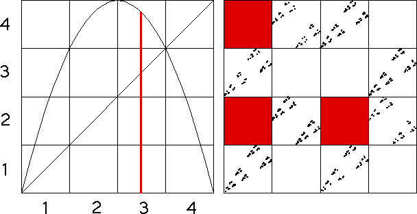

| Continuing this analysis of the logistic map, we see | |||
| from bin3 the logistic map cannot immediately iterate to bin1, to bin2, or to bin3. | |||
| Consequently, in the driven IFS | |||
| |||
| As a result, in the driven IFS the squares with addresses 13, 23, and 33 must be empty. | |||
|  | |||
| Continue to Markov Example, bin 4. |
Return to Markov Partitions and Driven IFS.